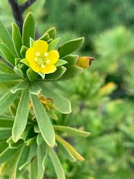

Surianaceae
Bay-Cedar Family
Surianaceae is a small family of flowering plants, consisting of shrubs and small trees, placed within the order Fabales. The family is best known for Suriana maritima (Bay Cedar), a salt-tolerant shrub found on tropical coasts worldwide. Other genera are restricted to Australia or Mexico.
Overview
Surianaceae is a small family within the large and economically important order Fabales, which also includes the massive Fabaceae (legume) family and Polygalaceae (milkwort) family. Surianaceae comprises only about 5 genera and 8-10 species of shrubs and small trees.
The family has a disjunct distribution. The most widespread species, Suriana maritima, has a pantropical distribution, typically growing on sandy or rocky shores just above the high tide line. The other genera are geographically restricted: Recchia and Stylobasium are found in Mexico, while Cadellia and Guilfoylia occur in Australia (though the latter two are sometimes placed in different families based on recent phylogenetic analyses).
Plants in this family are adapted to various environments, from coastal habitats (Suriana) to dry inland regions (e.g., Australian genera). They are characterized by alternate leaves (simple or compound), actinomorphic flowers usually with 5 petals, and a gynoecium typically composed of separate carpels.
Quick Facts
- Scientific Name: Surianaceae
- Common Name: Bay-Cedar family
- Number of Genera: Approximately 5 (e.g., Suriana, Recchia, Stylobasium; placement of Cadellia, Guilfoylia varies)
- Number of Species: Approximately 8-10
- Distribution: Pantropical coasts (Suriana), Mexico, Australia
- Evolutionary Group: Eudicots - Rosids - Fabales
Key Characteristics
Growth Form and Habit
Members of the Surianaceae family are shrubs or small trees. They can be evergreen or deciduous. Some species, particularly those in drier regions, exhibit xerophytic adaptations (adaptations to dry conditions).
Leaves
Leaves are arranged alternately along the stem. They can be simple (Suriana, Guilfoylia) or pinnately compound (Cadellia, Recchia). Leaves are often small, sometimes fleshy or leathery, and may be clustered on short shoots. Stipules may be present or absent.
Inflorescence
Flowers are borne in terminal or axillary inflorescences, which are typically cymes or racemes, or flowers may be solitary.
Flowers
Flowers are usually bisexual (though sometimes functionally unisexual) and actinomorphic (radially symmetrical). They are typically small. Key floral characteristics include:
- Calyx: Composed of 5 distinct or basally fused sepals, often persistent in fruit.
- Corolla: Composed of 5 distinct petals, usually yellow or white, sometimes absent.
- Androecium: Stamens usually number 5 or 10 (in one or two whorls), distinct. Anthers dehisce via longitudinal slits.
- Gynoecium: A superior ovary composed of 1 to 5 carpels. A key feature is that the carpels are usually separate (apocarpous) or only fused at the base or by the styles. Each carpel typically contains 1-2 ovules. Styles are separate or fused.
Fruits and Seeds
The fruit typically consists of one or more drupes (fleshy with a hard stone) or dry nutlets/achenes, corresponding to the number of mature carpels. Seeds usually have little or no endosperm.
Chemical Characteristics
Chemical constituents are not as defining as in some families, but tannins are commonly present. Unlike the previous family (Styracaceae), features like stellate hairs and balsamic resins are absent.
Field Identification
Identifying Surianaceae requires attention to habit, leaf details, flower structure (especially the carpels), and habitat.
Primary Identification Features
- Shrub or Small Tree Habit: Not large trees or herbs.
- Alternate Leaves: Leaves simple or pinnately compound, often small and clustered.
- Actinomorphic Flowers: Radially symmetrical, usually with 5 sepals and 5 petals (often yellow).
- Separate Carpels (Usually): The gynoecium typically consists of 1-5 distinct or nearly distinct carpels (apocarpous). This is a key distinguishing feature.
- Superior Ovary: Ovary positioned above the attachment point of sepals and petals.
Secondary Identification Features
- Habitat: Often coastal (Suriana) or in dry regions (Australian/Mexican genera).
- Stamens 5 or 10: Usually distinct.
- Fruit Type: Drupes or nutlets, often corresponding to the number of carpels.
Seasonal Identification Tips
Features are visible at different times:
- Flowering Season: Varies by species and location. Observe flower symmetry, petal/sepal count, stamen number, and especially the structure of the gynoecium (separate carpels).
- Fruiting Season: Look for the characteristic fruits (drupes or nutlets).
- All Seasons (Vegetative): Note the shrub/tree habit, alternate leaf arrangement (simple/compound), and clustering of leaves. Habitat (coastal vs. inland) can be a clue.
Common Confusion Points
Surianaceae might be confused with:
- Fabaceae (Legume Family): Also in Fabales, but typically have zygomorphic flowers (pea-like or other forms), compound leaves (often), and a single carpel developing into a legume fruit.
- Polygalaceae (Milkwort Family): Also in Fabales, but flowers are highly zygomorphic and complex, often resembling legumes but structurally different; fruit is usually a capsule or samara.
- Anacardiaceae (Cashew/Sumac Family): Trees/shrubs with alternate compound leaves, but flowers often small, unisexual, in panicles, and fruit is typically a drupe from a single carpel (syncarpous ovary). Often have resin ducts.
- Simaroubaceae (Quassia Family): Trees/shrubs often with pinnately compound leaves, but flowers usually have a prominent nectar disk and fruit is often a samara or schizocarp.
- Rosaceae (Rose Family): Some shrubs/trees with alternate leaves and 5-petaled flowers, but many have stipules, numerous stamens, and gynoecium structure varies greatly (but often syncarpous or different apocarpous arrangements with hypanthium).
Field Guide Quick Reference
Look For:
- Shrubs or small trees
- Alternate, simple or compound leaves (often small, clustered)
- Actinomorphic flowers (5 sepals, 5 petals)
- Superior ovary
- Carpels usually separate (1-5)
- Fruit of drupes or nutlets
Key Variations:
- Leaf type (simple vs. compound)
- Habitat (coastal vs. dry inland)
- Number of carpels (1-5)
- Petal color (yellow, white)
Notable Examples
Given the small size of the family and taxonomic uncertainties, Suriana is the most representative and widespread genus.

Suriana maritima
Bay Cedar / Coastal Suriana
A salt-tolerant, evergreen shrub found on tropical and subtropical coastlines around the world. It has small, fleshy, simple leaves clustered on branches, covered in soft hairs. Flowers are small, yellow, with 5 petals and usually 5 separate carpels developing into small nutlets. It often forms dense thickets on dunes and rocky shores.

Recchia spp.
(Mexican Recchia)
This genus includes a few species of shrubs or small trees endemic to Mexico. They typically have pinnately compound leaves and flowers with distinct carpels. They inhabit drier regions compared to the coastal Suriana. (Note: Detailed information and images might be less common).

Cadellia pentastylis (Taxonomic placement varies)
Ooline
A small tree found in dry rainforests of eastern Australia. It has pinnately compound leaves and flowers typically with 5 separate carpels developing into drupes. While traditionally placed in Surianaceae, recent studies often place it in its own family or near Akaniaceae, outside of Fabales. It's included here for historical context.
Phylogeny and Classification
Surianaceae is placed within the order Fabales, which belongs to the Rosid clade of eudicots. This order is dominated by the vast Fabaceae (legume) family. Surianaceae, along with Polygalaceae and Quillajaceae, represents other distinct lineages within the order. Its phylogenetic position helps bridge understanding between the major legume clade and other related groups.
The circumscription of the family has varied, with genera like Cadellia, Guilfoylia, and Stylobasium sometimes included or excluded based on different analyses. The core family, centered around Suriana and Recchia, represents a distinct lineage characterized by features like apocarpy within the predominantly syncarpous Fabales.
Position in Plant Phylogeny
- Kingdom: Plantae
- Clade: Angiosperms (Flowering plants)
- Clade: Eudicots
- Clade: Rosids
- Order: Fabales
- Family: Surianaceae
Evolutionary Significance
Despite its small size, Surianaceae is significant for:
- Phylogenetic Position: Represents one of the four distinct lineages within the economically and ecologically vital Fabales order.
- Apocarpy: Retention of separate carpels is relatively unusual within Fabales and provides insights into floral evolution within the order.
- Biogeography: The pantropical distribution of Suriana maritima is a classic example of successful dispersal in coastal environments, while other genera show restricted, relictual distributions.
- Adaptations: Shows adaptations to specific stressful environments like coastal salt spray and arid conditions.